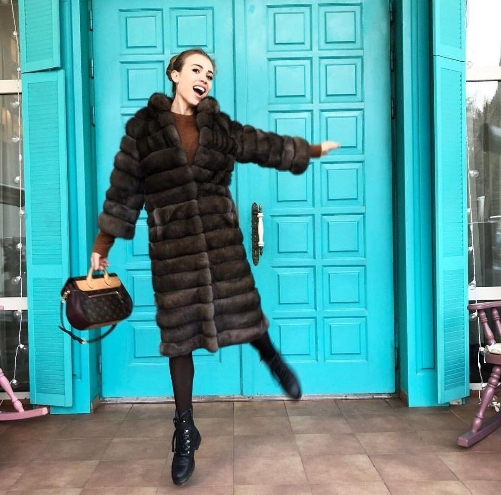
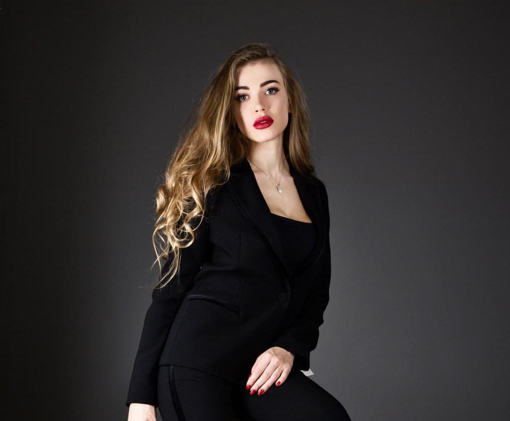
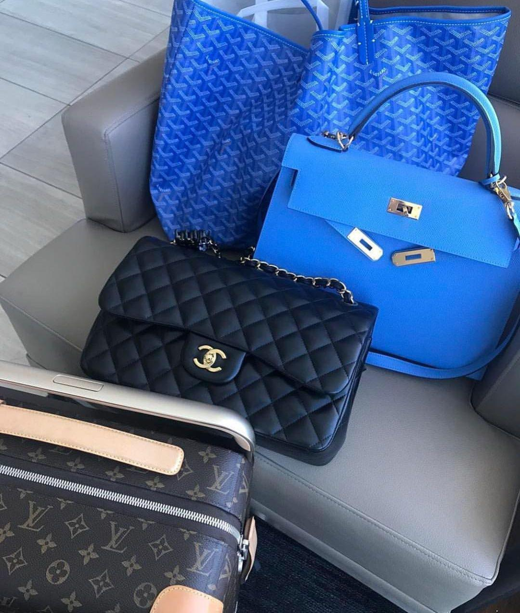

У всьому світі, серед любителів дорогих брендів популярна послуга аутентифікації, тобто перевірки речі на оригінальність. Сьогодні, коли мода на бренди переросла в культ, а можливості фабричного виробництва досягнули небувалих масштабів, послуги аутентифікаторів користуються небувалим попитом, як за кордоном, так і на теренах СНД. Ми поговорили з Ольгою Науг – баєром, власницею популярного блогу про моду в Instagram та професійним аутентифікатором і дізналися усі тонкощі цієї загадкової професії.
Добрий день, Ольго, перед усім, окресліть для мене і для наших читачів соновні рамки роботи аутентифікатора. Що він робить, які його обов'язки?
Добрий день. Насправді все не так таємничо і доволі зрозуміло. Основна і єдина задача аутентифікатора – це винести експертне рішення клієнту і сказати чи принесена річ є оригіналом чи ні. Обов'язків загалом не багато, ми повинні вкластися у зазначений термін, винести максимально компетентне рішення і не розповсюджуватися про клієнта та об'єкт експертизи.

Ніякого курсу, який можна пройти і стати
сертифікованим аутентифікатором, не існує в природі
Думаю, багатьом цікаво як потрапити у цю закрити тусовку, хто взагалі стає аутентифікатором і що для цього потрібно?
- Сфера аутентифікації дуже специфічна, в неї люди часто приходять через велику любов до бренду - колекціонери або ті, хто багато років займався комісійними продажами. Люди, вхожі в цей бізнес - власники комісійних магазинів і аутентифікатори, - самі переривають різні джерела і за кілька років формують свою базу знань. Ніякого курсу, який можна пройти і стати сертифікованим аутентифікатором, не існує в природі.
- Бренди нас не працевлаштовують. Будь-який їхній представник скаже, що нікого з продавців аутентифікації в магазинах не навчають. Марки в цьому взагалі не зацікавлені, їх позиція проста: хочете оригінал - купуйте в фірмовому бутіку. І навіть досвід роботи на бренд не дасть вам достатньої впевненості у цій справі. Якщо ви, наприклад, продавали сумки у 2015-2016 році, ви навряд чи знаєте всі відмінні риси сумок 2010-го або 2012-го.
Як у такому випадку, людині яка бажає стати аутентифікатором осягнути ази професії? Можливо є якісь школи чи щось подібне?
Всі аутентифікатори у всьому світі вчаться самі. Вони починають самоосвіту з доступних відкритих джерел, де розповідається, як відрізнити оригінал від підробки. Але більше половини статей в Мережі на цю тему - сміття. По-перше, актуальність цих даних швидко застаріває. Наприклад, раніше авторитетні видання писали про якусь неймовірну якість люксових речей, а зараз якщо зайти на якийсь «сумочний« форум, побачите, як клієнти скаржаться то на якість матеріалу, то на фабричний номер, який відвалюється, хоча вартість більшості брендових сумок починається з 1000$.
Тож у цій справі ключ до успіху це самоосвіта?
З колегами ми дійшли до висновку, що мінімум на цьому ринку потрібно пробути два-три роки і подивитися сотні сумок, перш ніж зайнятися аутентифікацією. Я захопилася цим питанням році в 2008-му, читала статті, дивилася на роботу інших аутентифікаторів в комісійках і онлайн. Коли через твої руки проходить не три сумки в рік, а три сумки в годину, починаєш розумітися на цій темі, у тебе в голові формується розуміння, на що потрібно звертати увагу. І ти починаєш розуміти тонкощі: наприклад, те, що здавалося ознакою фейку для одного типу сумок, в принципі може зустрічатися в оригіналах певного року. Весь процес нагадує рішення головоломки. Мені це було цікаво, і аутентифікація стала моїм хобі.
Як взагалі влаштована комунікація між аутентифікаторами? Є конкуренція, чи можливо це все одна велика дружня спільнота?
Я б сказала, що це радше дружня спільнота ніж навпаки. Серед нас немає якоїсь скаженої гонитви за клієнтами, це обумовлено не лише тим, що представників професії небагато. Ми постійно радимося один з одним – хтось краще знається на Chanel хтось на Gucci, хтось взагалі займається лише одним предметом гардеробу – ременями наприклад. Всередині ринку відбувається регулярний обмін інформацією між аутентифікаторами. Один від одного ми нічого не приховуємо, але майже не ділимося своїми знаннями в відкритих джерелах. Це не тому, що боїмося конкуренції всередині ринку. Ми завжди раді появі нових фахівців.

Ви зазначили, що не ділитеся з зовнішнім світом знаннями, чому?
Причина, по якій ми боїмося витоку відомостей про те, як відрізнити оригінал від підробки, в іншому. Якщо покупець може знайти інформацію про всі деталі оригінальної моделі в Google, її знайде і виробник підробок. А якщо він її виявить, то пошиє копію, яку буде ще важче відрізнити від оригіналу. Що більше знають виробники фейків, то більше часу у нас йде на аутентифікацію кожної сумки. Так що професіонали дуже рідко пишуть одкровення в Мережі, а якщо і пишуть, то якісь базові речі, наприклад, про наявність серійного номера, щоб покупці не стали володарем якоїсь зовсім неякісної підробки.
Тож попит на підробки все ще є чи це скоріше поодинокі випадки?
Звичайно є. Тим більше, що зараз фейки стали робити зовсім на іншомі рівні ніж раніше. Виробники підробок багато чому навчилися сім років тому. У 2011-му вдарив бум суперфейків - дуже якісних підробок, які фактично неможливо відрізнити від оригіналу. З їх появою багато аутентифікаційних сервісів, наприклад, в Америці відмовилися приймати деякі моделі сумок - наприклад, базові Chanel або Prada в шкірі «Сафіано». Репутація, якої їм коштувала б помилка, виявилася дорожчою. Ми такі сумки на онлайн-аутентифікацію теж не беремо, як і деякі туфлі Chanel, і капці або ремені від Hermès. На фотографіях зафіксувати всі важливі деталі для прийняття рішення по цим виробам неможливо. Для аутентифікації їх потрібно дивитися наживо. Але навіть після офлайн-огляду не завжди можна винести однозначний вердикт. Суперфейки зараз настільки гарні, що навіть була історія, як дівчинка купувала оригінали в бутіках, а потім здавала в них фейки, під виглядом повернення купленого товару.
З товаром розібралися, а хто основний клієнт у аутентифікатора?
В основному це жінки середнього віку, які знаються на високій моді, люблять хороші якісні речі. Чоловіки бувають також, але у мене це бувало дуже рідко. Зовсім молоденьких дівчаток серед наших клієнтів мало. Брендові речі все-таки коштують недешево навіть з рук. Звичайно, буває, що хтось довго збирав на одну сумку і зібрав, але в основному сумка - це ж не предмет першої необхідності, тому до нас ідуть ті, хто можуть їх собі дозволити. Найбільшим попитом користується класика - Louis Vuitton, Chanel, Dior і Bottega Veneta. Я для себе відзначаю, що в якийсь рік збільшується попит на Bottega, а на наступний - на Balenciaga, але якогось стрибка попиту на зовсім нові марки у нас ніколи не було.

Не всі готові розповідати публічно,
що збираються витратити 10 тисяч доларів на сумку.
А щодо ціни, які розцінки середньостатистичного аутентифікатора? Чи дороге це задоволення?
Спершу розкажу стосовно моєї роботи особисто: все, що користувачі постять в нашій групі в Facebook, ми аутентифікуємо безкоштовно. Але учасникам групи ми не гарантуємо, що візьмемося за аутентифікацію їх речі, і не говоримо про конкретні терміни, в які ми їх розглянемо. Якщо у кого-то з нашої команди є година-друга, ми допомагаємо безоплатно, особливо якщо бачимо, що на сумку піде всього 10-15 хвилин. Це скоріше цікавість і бажання розв'язати пару-трійку цікавих задачок, ніж якась гонитва за прибутком. А от все, що надсилають на вказаний в групі e-mail, або на мій особистий аутентифікуємо за гроші. І в першу чергу я беру замовлення з пошти. Сюди приходять листи від тих, хто не хоче афішувати перевірку або покупку сумки. Не всі готові розповідати публічно, що збираються витратити 10 тисяч доларів на сумку.
Чи різниться вартість на ваші послуги, скажімо в залежності від країни де працює аутентифікатор?
Вартість аутентифікації в цілому і на Заході, і в Східній Європі залежить від бренду. Найдорожчий - Hermès. Розцінки на аутентифікацію сумок цієї марки починаються від 45-50 доларів. Дешевше обійдеться Lоuis Vuitton - десь від 10 доларів, в залежності від сервісу. У США є сайт Fakespotters.com, і його прейскурант на послуги відображає середню вартість аутентифікації на всьому ринку. Просто не всі сервіси викладають ціни на свої послуги, до того ж вони часто змінюються. Наші розцінки починаються від 10$ за різні дрібниці і доходять до 100 доларів за крокодилячу Kelly або Birkin Hermès. Вони коштують дорого: від 25 тисяч доларів до нескінченності (одну не так давно продавали на аукціоні за 223 тисячі) - і їх аутентифікація займає багато часу, тому ціна за послугу може бути і більше.
А буває так, що скажімо клієнт незадоволений винесеним рішенням аутентифікації? Чи можливо хоче його оскаржити?
Ну щодо клієнтів, які незадоволені саме моєю роботою, то таке бувало не часто, хоч і траплялося. А от спірні ситуації загалом виникають часто. Я недавно намагалася допомогти дівчинці, яка опинилася в центрі скандалу: eBay викрив її в продажі фейку Chanel. На мій погляд, це був оригінал, і сама дівчинка навіть пропускала сумку через Chanel SPA в офіційному бутику (послуга від бренду - в бутик можна принести річ, наприклад, на ремонт). Те, що сам майстер марки в SPA прийняв річ, свідчить на користь того, що сумка оригінальна (звичайно, помилки майстра бувають, але це величезна рідкість). У підсумку на нашому боці були фахівець бренду, російські та американські аутентифікатори, але eBay був непохитний, він все одно встав на сторону покупця, заявив, що це підробка, і залишився при своїй думці. Помилитися можуть всі. Навіть у машинки Entrupy є 1,5% похибки. А якогось єдиного експерта, чия думка була б визначальною і істиною в останній інстанції, просто немає.
На моїй практиці ще не було випадків, коли клієнт віддавав річ на експертизу мені, а потім від когось ще отримував по ній інший вердикт і вимагав би повернути гроші. Але якщо така ситуація виникне, я їх із задоволенням поверну. Тут нікого судити і ні з ким судитися. До того ж, якщо ви купуєте сумку за 10 тисяч доларів, питання про повернення 50 доларів за аутентифікацію у вас навряд виникне.
Але все ж таки, на випадок напруженої ситуації чи є в аутентифікатора якийсь захист, на кшталт профсоюзного юриста чи страховки?
На жаль, профсоюзного юриста у мене особисто, та і в жодного аутентифікатора немає, а хотілося б (сміється). А от щодо страховки, то так, на випадок зовсім серйозних ситуацій у деяких аутентифікаційних сервісів зазвичай є страховка. Але, зіткнувшись зі скандальним клієнтом, я думаю, будь-який бренд обере повернути гроші і розірвати відносини з клієнтом і не буде триматися за 10 або 50 доларів, тільки щоб довести свою правоту. Насправді, як раз таки багато хто йде з аутентифікації через гнівну чи неадекватну реакцію клієнтів. По-перше, далеко не всі готові почути, що їх сумка - підробка. По-друге, зляться продавці фейків: їм нас, звичайно, любити нема за що. Чого тільки про нас не пишуть - то погрози, то бруд в соцмережах. Хтось пише, що всі аутентифікатори шарлатани і тому подібне. А про себе особисто я читала, что я - шахрайка і навіть те, що їжджу за кордон вигадую. Усюди є свої підводні камені, але я люблю цю справу.